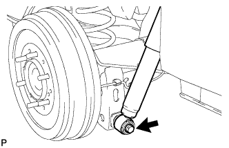

LÒ XO TRỤ PHÍA SAU > LẮP |
| 1. LẮP LÒ XO TRỤ PHÍA SAU |
Lắp lò xo trụ và cao su vào tay điều khiển phía dưới và khung xe. Hãy lắp đầu dưới của lò xo trụ vào chỗ lõm của đế phía dưới lò xo.
| 2. LẮP TẠM THỜI CỤM GIẢM CHẤN SAU |
|  |
Lắp 2 bạc mới và 2 cái hãm vào bộ giảm chấn.
Lắp tạm bộ giảm chấn vào vỏ cầu xe bằng đai ốc.
| 3. LẮP BÁNH XE SAU |
| 4. ỔN ĐỊNH HỆ THỐNG TREO |
Hạ thấp xe.
Hãy nhún xe vài lần để ổn định hệ thống treo.
| 5. XIẾT CHẶT HOÀN TOÀN BỘ GIẢM CHẤN PHÍA SAU |
Xiết chặt bulông.
| 6. LẮP ỐNG MỀM CỦA PHANH SAU |
Lắp ống vào cút 3 ngả (chữ T)
Lắp kẹp vào ống mềm.
Lắp ống mềm với đường ống phanh.
| 7. LẮP CỤM CÁP PHANH TAY NO.3 |
| 8. LẮP ĐUÔI ỐNG XẢ |
Lắp đuôi ống xả (Xem trang Kích chuột vào đây).
| 9. LẮP DÂY CẢM BIẾN ĐIỀU KHIỂN TRƯỢT |
| 10. ĐỔ DẦU PHANH VÀO BÌNH CHỨA |
Đổ dầu phanh vào bình chứa (Xem trang Kích chuột vào đây).
| 11. XẢ KHÍ ĐƯỜNG ỐNG PHANH |
Xả khí đường ống phanh (Xem trang Kích chuột vào đây).
| 12. KIỂM TRA MỨC DẦU TRONG BÌNH CHỨA |
Kiểm tra mức dầu trong bình chứa (Xem trang Kích chuột vào đây).
| 13. KIỂM TRA RÒ RỈ DẦU PHANH |